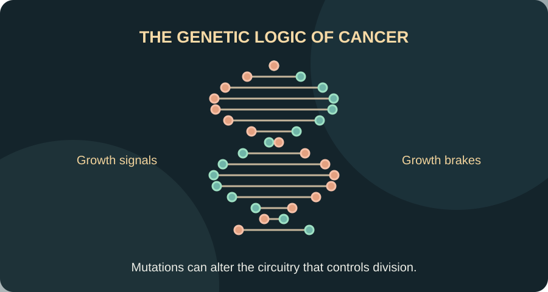

Searching under the brightest streetlamp
Cancer researchers work where experiments are possible, not always where human disease is most common. Peyton Rous's chicken sarcoma virus can reproducibly cause a tumor, making it an exceptionally useful laboratory system. The book compares this to searching for lost keys under a streetlamp because the light is brightest there. A convenient model may illuminate fundamental mechanisms while also directing attention away from other causes.
Three competing explanations
By the middle twentieth century, cancer researchers divide among those who emphasize viruses, environmental carcinogens, and heredity or chromosomes. These are not necessarily mutually exclusive, but their advocates often treat them as rival explanations. The stakes are high because research funding and whole careers follow from the theory considered most promising.
Howard Temin's bold hypothesis
Studying RNA tumor viruses, Howard Temin proposes that viral genetic information can be copied into DNA and incorporated into host cells. This conflicts with the simple picture of genetic information always flowing from DNA to RNA. Temin's idea seems implausible to many colleagues until experiments identify the necessary enzyme.

Reverse transcriptase changes biology
Temin and David Baltimore independently identify an enzyme that copies RNA into DNA, later known as reverse transcriptase. Viruses that use this mechanism are called retroviruses. The result transforms molecular biology and explains how some viral genetic material can become part of a host cell's genome.
The search for a universal human cancer virus fails
Enormous efforts to discover one common retroviral cause of human cancer do not deliver the hoped-for result. Certain viruses can contribute to specific human cancers, but the notion that a single virus explains all malignancy is wrong. The chapter's irony is that retrovirus research eventually illuminates other diseases, including HIV, while cancer biology must still solve the question of what happens inside the cancer cell.